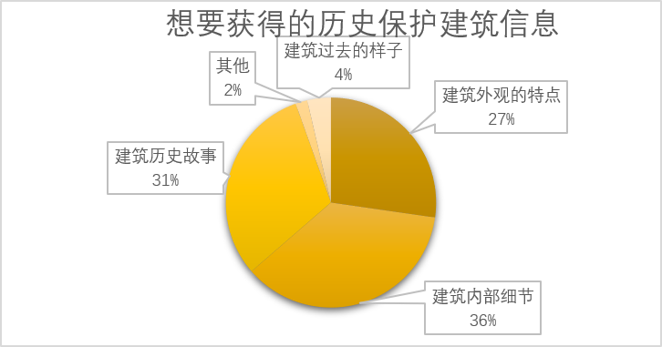

AR重拾城市黑白影像是一个以上海历史文化保护建筑为主题的旅游类移动应用。用户可以自行选择感兴趣的景区地图开始行程，通过AR技术识别牌匾，获得实景模型还原、VR视频的景点讲解。结束行程后，生成一张路线图，保存用户自己拍下的照片，以便随时随地分享到各个社交平台。
该项目原为小组作品，我作为组长负责了前期的调研、功能模块的设计以及AR部分开发，点击这里查看当时的作品。本次我根据之前的调研结果，重新设计了交互流程、界面整体风格和信息布局。
用户调研

游客会遇到这些问题
- 不清楚城市中历史保护建筑的位置
- 部分历史保护建筑有出入限制，无法入内参观
- 很难获取历史保护建筑的相关信息/多为文字信息较为枯燥
可能的解决方法
- 引入地图和导航
- 丰富景点讲解形式，加入查看模型、视频等方式解决出入限制问题
- 生成路线打卡图满足社交分享的欲望
设计重点
地图和导航
AR扫描牌匾，获取信息
生成路线打卡图，分享到社交平台
实景模型还原
VR视频
交互流程
原型设计
选择想要参观的景区
自定义选择景点，
并获取导航信息
随时点击右上角按钮拍摄


手机扫描牌匾后，
获得该建筑基本简介
以及景点讲解的入口

除了查看建筑模型外观，
还能查看模型细节相关文字信息

右侧按钮栏可以截图、播放暂停视频、
自动跳转到感兴趣的片段

结束行程后生成路线图，
可与行程中拍摄的照片一起分享到各社交平台
随时进入图鉴查看曾经的行程路线图和照片，
再次分享
最终界面展示